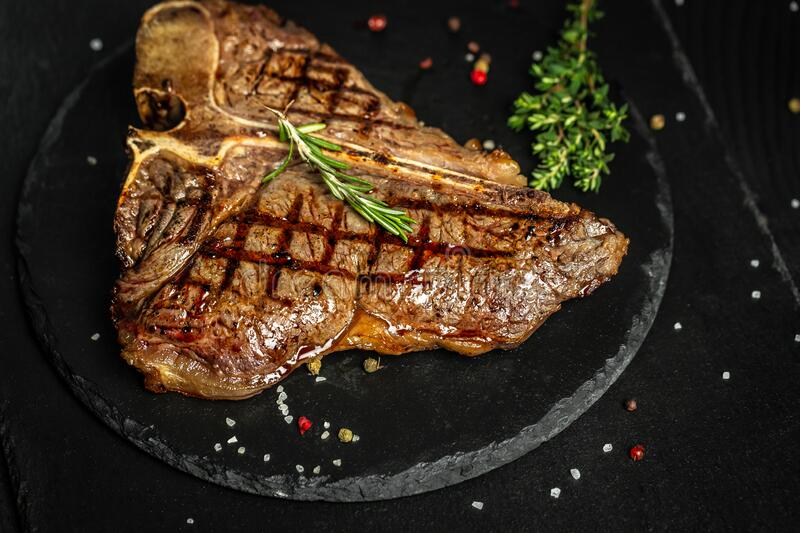

Home
Bistec

This is a wonderful rosemary steak from Argentina.
This meat dish is quite popular in various restaurants around Buenos Aires.
Ingredients
- 1 cup red wine
- 1 teaspoon salt
- 1 sprig fresh rosemary
- 4 New York strip steaks, cut 1-inch thick
Steps
- Combine red wine, salt, and rosemary in a small bowl. Let stand at room temperature for 2 to 3 hours.
- Heat a large cast iron skillet or griddle over high heat. Place steaks on the hot skillet and cook to desired degree of doneness, about 8 minutes per side. An instant-read thermometer inserted into the centers of steaks should read about 135 degrees F (62 degrees C) for medium-rare.
- Pour red wine mixture into the skillet with steaks; let boil for 1 minute. Serve steaks with sauce on a deep platter.